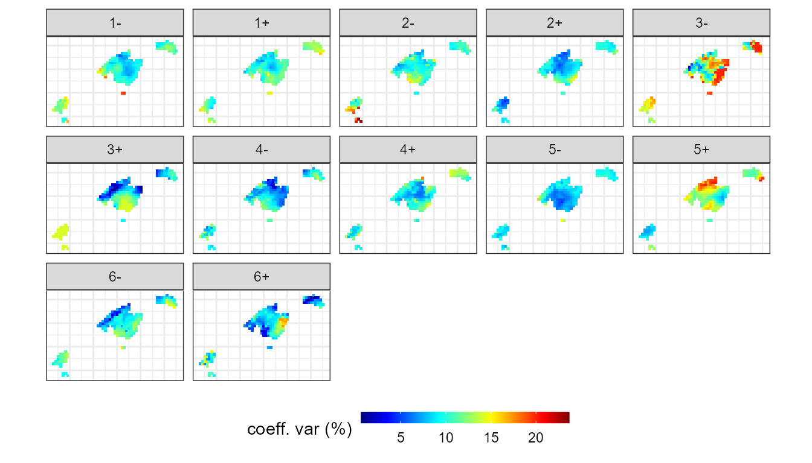

Environment-To-Circulation
Marc Lemus-Canovas
2020-12-02
Source:vignettes/environment-to-circulation.Rmd
environment-to-circulation.RmdIn this case we will develop a synoptic classification that goes from environment to circulation. A simple example would be to study the WT associated with daily episodes equal to or greater than 100 mm.
Introduction to the T-mode classification method
The structure of the matrix in T-mode establishes that the variables are the days, and the observations are the grid points. In this case, the PCA establishes the linear relationships between each daily map of the atmospheric variable in order to extract the main WT. The PCA associates directly those days more similar to each other to group the WTs, so it is not necessary to use any clustering method. synoptReg allows to perform two variants of the T-mode based on: 1) absolute loadings (correlations) of each day against each PC. Day 1 will be associated with the PC with a higher correlation; 2) positive and negative loadings of each of the days against each PC. Day 1 may be associated with PC X+ or PC X-, depending on whether the correlation is positive or negative. This last option, allows to obtain the double of classes of the selected components. If we select 4 PCs, the final result can be up to a maximum of 8 CTs. Note, that a VARIMAX rotation is applied to the retained PCs. See Circulation-To-Environment approach vignette for more information about PC rotation.
It is recommended to review the references proposed in the section Method references.
Extracting the torrential rainfall events (>= 100 mm/24h)
In this example we will extract every day that has at least one point of grid with a precipitation >= 100 mm in the Balearic Islands. This can easily be done with the dplyr() library from the tidyverese (Wickham et al., 2019).
library(synoptReg)
#>
#> ****
#> Welcome to synoptReg!
#> Using synoptReg for research publication? Please cite it!
#> I'm an early career researcher and every citation matters.
#> ****
library(dplyr)
#>
#> Attaching package: 'dplyr'
#> The following objects are masked from 'package:stats':
#>
#> filter, lag
#> The following objects are masked from 'package:base':
#>
#> intersect, setdiff, setequal, union
data(pcp)
torrential_dates <- pcp %>%
mutate(value = value /10) %>% # converting to mm
filter(value >= 100) %>%
distinct(time) %>%
pull()The result is a vector of 83 dates that reflect those days with a precipitation >= to 100 mm at any point of the Balearic Islands.
Synoptic classification procedure
Reading NetCDF data
In order to compute the synoptic classification of these 83 events we need to read previously the amospheric data from the ERA-Interim dataset (Dee et al., 2011), stored in NetCDF files. To read these type of files, synoptReg does not have a specific function. In previous versions it did, but now there are more intuitive and simple alternatives for reading it. In this case, we will use the ReadNetCDF() function included in metR. The variables we will read are: mean sea level pressure (mslp), geopotential height at 500 hPa (z500) and temperature at 850 hPa (t850). Thus, our classification will be made with 3 atmospheric variables that will provide information from different layers of the troposphere (surface and height).
Note that reading with ReadNetCDF() does not return exactly the desired data.frame format. For this reason, a simple manipulation with dplyr() is required:
library(metR)
#> Warning: package 'metR' was built under R version 4.0.3
# listing NetCDF files stored in synoptReg:
slp_file <- system.file("extdata", "mslp_ei.nc", package = "synoptReg")
z500_file <- system.file("extdata", "z500_ei.nc", package = "synoptReg")
t850_file <- system.file("extdata", "t850_ei.nc", package = "synoptReg")
# Reading the data stored in the NetCDFs files as tibbles. it can take a while.
slp <- ReadNetCDF(file = slp_file,vars = "msl",out = "data.frame") %>%
setNames(c("time","lat","lon","value")) %>%
select(lon,lat,time, value) %>% mutate(time = as.Date(time))
z500 <- ReadNetCDF(file = z500_file,vars = "z",out = "data.frame") %>%
setNames(c("time","lat","lon","value")) %>%
select(lon,lat,time, value) %>% mutate(time = as.Date(time))
t850 <- ReadNetCDF(file = t850_file,vars = "t",out = "data.frame") %>%
setNames(c("time","lat","lon","value")) %>%
select(lon,lat,time, value) %>% mutate(time = as.Date(time))Filtering and grouping the atmospheric variables using the torrential events
Now, we can proceed to: 1) grouping the three atmospheric variables in one unique tibble; 2) Subset the atmospheric variables using the torrential rainfall dates. All this process can be computed by means of tidy_nc(). A list is required to group the atmospheric variables.
vars_torrential <- tidy_nc(x = list(slp,z500,t850),
time_subset = torrential_dates,
name_vars = c("slp","z500","t850"))
vars_torrential
#> # A tibble: 35,607 x 6
#> var lon lat time value anom_value
#> <chr> <dbl> <dbl> <date> <dbl> <dbl>
#> 1 slp -15 55 2000-09-04 101343. -330.
#> 2 slp -12.5 55 2000-09-04 101353. -320.
#> 3 slp -10 55 2000-09-04 101447. -226.
#> 4 slp -7.5 55 2000-09-04 101753. 80.1
#> 5 slp -5 55 2000-09-04 102044. 371.
#> 6 slp -2.5 55 2000-09-04 102200. 527.
#> 7 slp 0 55 2000-09-04 102296. 623.
#> 8 slp 2.5 55 2000-09-04 102248. 575.
#> 9 slp 5 55 2000-09-04 102092. 419.
#> 10 slp 7.5 55 2000-09-04 101949. 276.
#> # ... with 35,597 more rowsWe already have the variables grouped and filtered. In addition, tidy_nc() computes the anomaly of the atmospheric variables using the monthly average of the whole study period before filtering the dates.
Selecting the number of PCs and Synoptic classification performance
As in the case of the circulation-to-environment approach, it is important to take the decision on the number of components retain in order to carry out the synoptic classification. To help in the decision making process, pca_decision() returns a scree test, among other stats:
info <- pca_decision(vars_torrential,ncomp = 30,norm = T,matrix_mode = "T-mode")
info$screeplotBy means of the Scree plot, it seems reasonable to retain 5 PCs. These 5 PCs explain the 82% of the variance. With this information, we can already perform our synoptic classification, specifying that the matrix mode will be "T-mode":
cl <- synoptclas(vars_torrential,ncomp = 5,norm = T,matrix_mode = "T-mode")
#> Warning: The `x` argument of `as_tibble.matrix()` must have unique column names if `.name_repair` is omitted as of tibble 2.0.0.
#> Using compatibility `.name_repair`.
#> This warning is displayed once every 8 hours.
#> Call `lifecycle::last_warnings()` to see where this warning was generated.
cl # list object containing the classification and the classified grid
#> $clas_abs
#> # A tibble: 83 x 2
#> time WT
#> <date> <dbl>
#> 1 2000-09-04 1
#> 2 2000-10-11 2
#> 3 2000-10-22 2
#> 4 2001-02-18 4
#> 5 2001-07-16 1
#> 6 2001-09-06 1
#> 7 2001-11-10 2
#> 8 2001-11-11 2
#> 9 2001-11-14 2
#> 10 2001-11-15 2
#> # ... with 73 more rows
#>
#> $clas_max
#> # A tibble: 83 x 2
#> time WT
#> <date> <dbl>
#> 1 2000-09-04 1
#> 2 2000-10-11 1
#> 3 2000-10-22 5
#> 4 2001-02-18 4
#> 5 2001-07-16 1
#> 6 2001-09-06 1
#> 7 2001-11-10 2
#> 8 2001-11-11 2
#> 9 2001-11-14 2
#> 10 2001-11-15 2
#> # ... with 73 more rows
#>
#> $clas_pn
#> # A tibble: 83 x 2
#> time WT
#> <date> <chr>
#> 1 2000-09-04 1+
#> 2 2000-10-11 2-
#> 3 2000-10-22 2-
#> 4 2001-02-18 4+
#> 5 2001-07-16 1+
#> 6 2001-09-06 1+
#> 7 2001-11-10 2+
#> 8 2001-11-11 2+
#> 9 2001-11-14 2+
#> 10 2001-11-15 2+
#> # ... with 73 more rows
#>
#> $grid_clas_abs
#> # A tibble: 2,145 x 8
#> var lon lat time WT mean_WT_value mean_WT_anom_va~ cv_WT_value
#> <chr> <dbl> <dbl> <date> <dbl> <dbl> <dbl> <dbl>
#> 1 slp -15 55 2000-09-04 1 102114. 437. 0.684
#> 2 slp -12.5 55 2000-09-04 1 102189. 512. 0.638
#> 3 slp -10 55 2000-09-04 1 102236. 559. 0.618
#> 4 slp -7.5 55 2000-09-04 1 102253. 576. 0.584
#> 5 slp -5 55 2000-09-04 1 102262. 585. 0.577
#> 6 slp -2.5 55 2000-09-04 1 102244. 567. 0.587
#> 7 slp 0 55 2000-09-04 1 102228. 551. 0.619
#> 8 slp 2.5 55 2000-09-04 1 102189. 512. 0.644
#> 9 slp 5 55 2000-09-04 1 102127. 450. 0.643
#> 10 slp 7.5 55 2000-09-04 1 102041. 364. 0.626
#> # ... with 2,135 more rows
#>
#> $grid_clas_max
#> # A tibble: 2,145 x 8
#> var lon lat time WT mean_WT_value mean_WT_anom_va~ cv_WT_value
#> <chr> <dbl> <dbl> <date> <dbl> <dbl> <dbl> <dbl>
#> 1 slp -15 55 2000-09-04 1 101609. -0.583 1.18
#> 2 slp -12.5 55 2000-09-04 1 101635. 26.0 1.18
#> 3 slp -10 55 2000-09-04 1 101634. 24.9 1.24
#> 4 slp -7.5 55 2000-09-04 1 101617. 8.05 1.27
#> 5 slp -5 55 2000-09-04 1 101614. 4.72 1.27
#> 6 slp -2.5 55 2000-09-04 1 101574. -35.0 1.28
#> 7 slp 0 55 2000-09-04 1 101529. -80.2 1.35
#> 8 slp 2.5 55 2000-09-04 1 101498. -111. 1.30
#> 9 slp 5 55 2000-09-04 1 101473. -136. 1.17
#> 10 slp 7.5 55 2000-09-04 1 101443. -166. 1.02
#> # ... with 2,135 more rows
#>
#> $grid_clas_pn
#> # A tibble: 4,290 x 8
#> var lon lat time WT mean_WT_value mean_WT_anom_va~ cv_WT_value
#> <chr> <dbl> <dbl> <date> <chr> <dbl> <dbl> <dbl>
#> 1 slp -15 55 2000-09-04 1+ 102328. 692. 0.724
#> 2 slp -12.5 55 2000-09-04 1+ 102334. 698. 0.681
#> 3 slp -10 55 2000-09-04 1+ 102316. 680. 0.658
#> 4 slp -7.5 55 2000-09-04 1+ 102271. 635. 0.605
#> 5 slp -5 55 2000-09-04 1+ 102230. 593. 0.586
#> 6 slp -2.5 55 2000-09-04 1+ 102167. 531. 0.586
#> 7 slp 0 55 2000-09-04 1+ 102120. 484. 0.634
#> 8 slp 2.5 55 2000-09-04 1+ 102028. 392. 0.671
#> 9 slp 5 55 2000-09-04 1+ 101913. 277. 0.669
#> 10 slp 7.5 55 2000-09-04 1+ 101781. 145. 0.640
#> # ... with 4,280 more rowsThe object returned by synoptclas differs relatively from the object returned when we apply a classification in "S-mode". This time, the output is a list with 4 objects: 2 objects are tibbles with the variables time and WT. The difference between the two objects lies in the grouping method applied to achieve the WTs. In clas_abs the association is done with the absolute values of the loadings; in clas_pn the extreme positive and negative values are used to get the final groups. The two remaining objects are the grids classified with each of these two methods. This time we will work with the method that classifies the WTs using the positive/negative loadings (correlation coefficients).
Let’s see the result:
library(ggplot2)
library(dplyr)
library(rnaturalearth)
library(metR)
borders <- ne_countries(continent = c("europe","africa"),
returnclass = "sf",scale = 50)
ggplot()+
geom_raster(filter(cl$grid_clas_pn, var == "z500"),
mapping = aes(lon,lat,fill = mean_WT_anom_value),
interpolate = T,hjust = 0,vjust = 0)+
geom_sf(data = borders, fill = "transparent")+
geom_contour2(data = filter(cl$grid_clas_pn,var == "slp"),
aes(x=lon,y=lat,z=mean_WT_value/100),
binwidth = 4, color = "black") +
geom_text_contour(data= filter(cl$grid_clas_pn, var == "slp"),
aes(x=lon,y=lat,z=mean_WT_value/100),
stroke = 0.15,binwidth = 4) +
geom_contour2(data = filter(cl$grid_clas_pn,var == "t850"),
aes(x=lon,y=lat,z=mean_WT_anom_value),
binwidth = 2, color = "black", linetype = "dashed") +
geom_text_contour(data= filter(cl$grid_clas_pn, var == "t850"),
aes(x=lon,y=lat,z=mean_WT_anom_value),
stroke = 0.15,binwidth = 2) +
guides(fill = guide_colourbar(barwidth = 9, barheight = 0.5))+
facet_wrap(~WT, ncol = 5) +
scale_fill_divergent(name = "Z anomaly (m)") +
scale_x_continuous(limits = c(-15,15), expand = c(0,0))+
scale_y_continuous(limits = c(30,55), expand = c(0,0))+
theme_bw() + theme(axis.title = element_blank(),
axis.text = element_blank(),
axis.ticks = element_blank(),
legend.position = "bottom")
#> Warning: Removed 230 rows containing missing values (geom_raster).
Analysing the spatial contribution of each WT to torrential rainfall in the Balearic Islands
We can then calculate the maximum precipitation associated with these CT/WT. To do this we will use the function ct2env() indicating in the argument fun the function max:
max_torrential_pcp <- ct2env(pcp,clas = cl$clas_pn,fun = max,out = "data.frame")
ggplot() +
geom_tile(data=max_torrential_pcp, aes(x=lon, y=lat,fill=calc/10)) +
scale_fill_gradientn(colours = rev(pals::linearl(100)),
name = "rainfall (mm/day)",na.value="transparent") +
coord_equal()+
scale_colour_gradient(guide = 'none') + facet_wrap(~WT, ncol = 5) +
guides(fill = guide_colourbar(barwidth = 9, barheight = 0.5))+
theme_bw() + theme(axis.title = element_blank(),
axis.text = element_blank(),
axis.ticks = element_blank(),
legend.position = "bottom")
In addition, we can assess the spatial variability of this torrential events by creating the function of the coefficient of variation (cv) in the fun argument:
cv_torrential_pcp <- ct2env(pcp,
clas = cl$clas_pn,
fun = function(x){sd(x)/mean(x)*100},
out = "data.frame")
ggplot() +
geom_tile(data=cv_torrential_pcp, aes(x=lon, y=lat,fill=calc/10)) +
scale_fill_gradientn(colours = pals::jet(100),
name = "coeff. var (%)",na.value="transparent") +
coord_equal()+
scale_colour_gradient(guide = 'none') + facet_wrap(~WT, ncol = 5) +
guides(fill = guide_colourbar(barwidth = 9, barheight = 0.5))+
theme_bw() + theme(axis.title = element_blank(),
axis.text = element_blank(),
axis.ticks = element_blank(),
legend.position = "bottom")
Method references
Synoptic classification method:
For absolute maximum loadings approach:
- Lopez-Bustins, J.A., Martin-Vide, J., Sanchez-Lorenzo, A., 2008. Iberia winter rainfall trends based upon changes in teleconnection and circulation patterns. Glob. Planet. Change. https://doi.org/10.1016/j.gloplacha.2007.09.002
For maximum positive-negative loadings approach:
- Martin-Vide, J., Sanchez-Lorenzo, A., Lopez-Bustins, J.A., Cordobilla, M.J., Garcia-Manuel, A., Raso, J.M., 2008. Torrential rainfall in northeast of the Iberian Peninsula: synoptic patterns and WeMO influence. Adv. Sci. Res. 2, 99–105. https://doi.org/10.5194/asr-2-99-2008